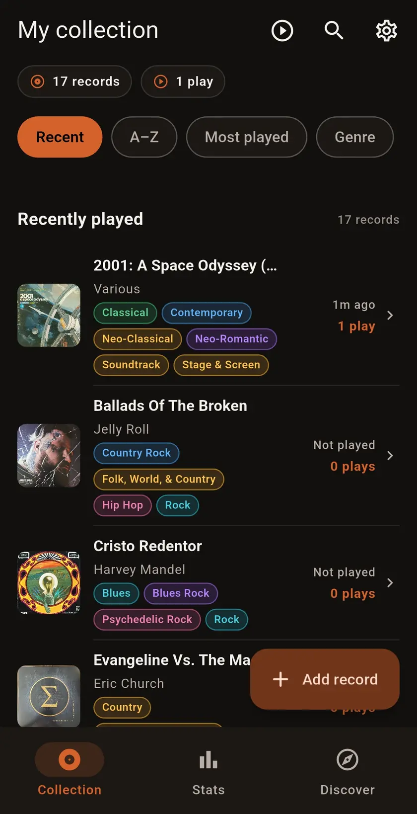
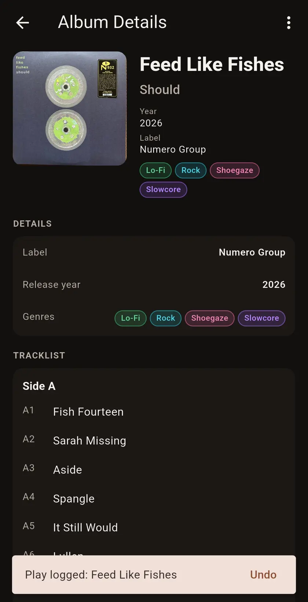

{kind=link}
{kind=link}
{kind=link}
{kind=link}
{kind=link}
{kind=link}
{kind=link}
Start your way
Add your first record by hand or connect Discogs to import. The in-app walkthrough guides you through the real thing.
FOR THE LOVE OF THE RECORD
The records you own. The spins you remember. The favorites waiting to be rediscovered. Bring it all together with Groovefolio.
Made for Android. Built around your collection.

MEET GROOVEFOLIO
From the first record on your shelf to the one you’ve played a hundred times.
A HOME FOR EVERY RECORD
Browse artwork, find a favorite, or check the details of a release. Your collection is ready when the mood strikes.
Discogs features need an internet connection. Manual entry works offline.
REMEMBER EVERY SPIN
Log an album in a few taps, or link an NFC tag and let a tap of your phone do the remembering.
YOUR LISTENING, IN FOCUS
Find the artists you keep coming back to, the genres setting the mood, and how much of your shelf you’ve actually played.
Built from the plays you log—not a streaming account.
THE NEXT GREAT SPIN IS ALREADY HERE
Discover connects your listening habits to records you already own. Familiar favorites, overlooked albums, and a reason behind every pick.

SMALL TAG. LOVELY LITTLE SHORTCUT.
Give your physical collection a simple digital connection. Link a writable NFC tag to a record, then tap your unlocked Android phone to log a full-album play.
Choose a record and write its link to a compatible NFC tag.
Put the tag on the sleeve or outer protector—not the vinyl itself.
Get a confirmation. In the app, Undo is there for accidental taps.
NFC is optional. Requires a compatible NFC-enabled Android phone and writable tag. You can always log plays manually.
YOUR SHELF. YOUR SPACE.
No Groovefolio account to create. Your collection and listening history live on your device.
Take a look in Settings ↗Add your first record by hand or connect Discogs to import. The in-app walkthrough guides you through the real thing.
Browse your saved collection, log plays, and explore local Stats and Discover without a server connection.
There’s no automatic cloud backup. Uninstalling or clearing app data removes your local records and listening history.
BEFORE THE FIRST SPIN
Not yet. Groovefolio is being prepared for its first public Android release. The download link will be added here when it’s available.
No. You can add and manage records manually. Connecting Discogs is optional and enables its metadata and collection-import features, which use the internet.
No. NFC is an optional shortcut for logging a play. You can log every listen manually without buying anything. For tap-to-log, you’ll need a supported phone and a writable NDEF-compatible tag.
Discover currently recommends records from your own collection, using your saved listening history. It explains why a record matches your taste.
No. Your collection, artwork, and play history are stored locally. There is no automatic cloud backup or device sync, so deleting app data or uninstalling removes that local information.
The first release is focused on Android. There’s no iPhone release date to announce.
THE NEXT CHAPTER OF YOUR COLLECTION
Your record shelf, remembered.
We’re getting ready for the first public release.
The
download link will appear right here.